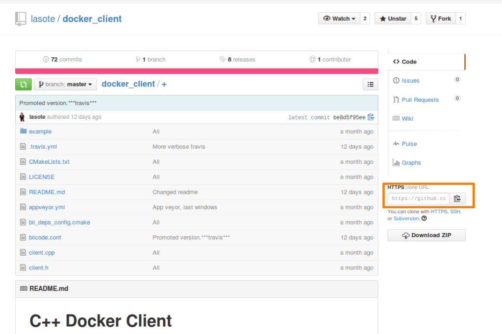
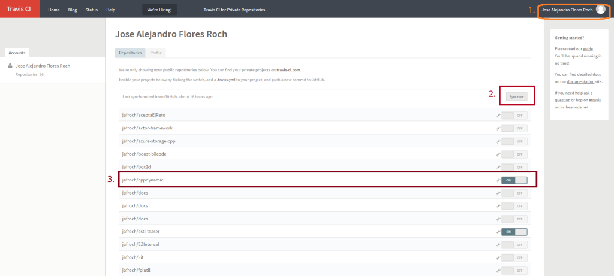
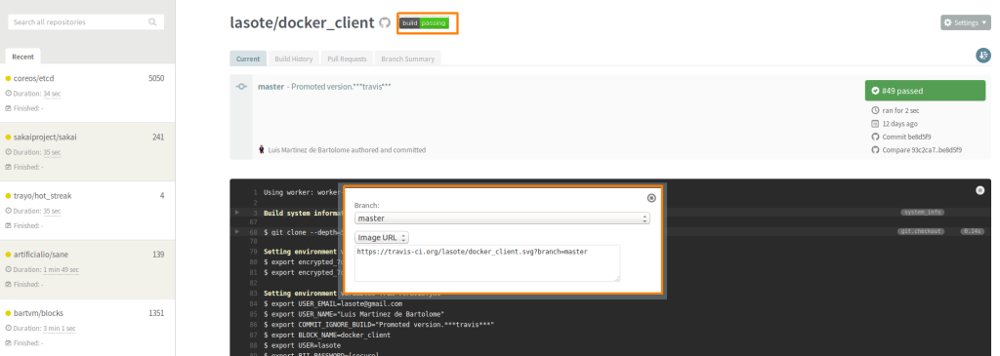
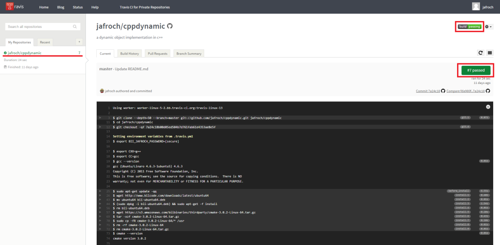

This is a simple guide about how to automatically build and publish via Travis CI and Github.
biicode, Travis CI and Github: a C/C++ dev environment
GitHub allows us to create a remote repository to develop collaboratively.
Travis CI provides continuous integration inside our projects.
Import from GitHub!
First of all make sure you’ve installed biicode and Git.
Once both you got both of them, you can clone the github repository you want to make a new biicode block.

Create the new BIICODE project (as usual) and create q working local copy in your biicode block:
1 2 3 4 | $ bii init myproject $ cd myproject/blocks $ git clone https://github.com/lasote/docker_client.git $ cd docker_client |
Now we’ve got everything we need to start working locally.
Automatically build your projects via Travis CI
Travis CI provides continuous integration inside your project, to use it, just create a file named “.travis.yml” inside your project folder.
Write on your “.travis.yml” file, the commands to build your project, and if it successes publish it automatically to BIICODE.
First of all sign up in Travis CI with your GitHub account and once there, go to your profile, sync your repos and enable Travis CI building:
To use Travis CI in your project you’ve got to be using a Linux machine (you can use: Koding, Cloud9IDE or just a virtual machine on your computer). Once in your linux machine check if ruby is installed:
1 | $ which ruby |
if you see a path such as /usr/bin/ruby, Ruby is installed.
If ruby is not installed:
1 | $ sudo apt-get install ruby |
When ruby is installed:
1 | $ sudo gem install travis |
Please check Travis docs or stackoverflow related issues if your having any troubles installing travis gem.
Now, create your “.travis.yml” file like the example below on your block folder, this file is to building and automatically publishing to biicode, after that it will check if your biicode.conf file [parents] have been updated while publishing and committing the changes to github. This is the one I’m using, don’t forget to adjust the config and “the env” it to your needs:
“.travis.yml”
1 2 3 4 5 6 7 8 9 10 11 12 13 14 15 16 17 18 19 20 21 22 23 24 25 26 27 28 29 30 31 32 33 34 35 36 37 38 39 40 41 42 43 44 45 46 47 48 49 50 51 52 53 54 55 56 57 58 59 60 61 | language: cpp compiler: - gcc before_install: - export TRAVIS_COMMIT_MSG="$(git log --format=%B --no-merges -n 1)" - if [[ "$TRAVIS_COMMIT_MSG" = "$COMMIT_IGNORE_BUILD" ]]; then exit 0 ; fi - if [ "$CXX" == "g++" ]; then sudo add-apt-repository -y ppa:ubuntu-toolchain-r/test; fi - sudo apt-get update -qq - git config --global user.email "$USER_EMAIL" - git config --global user.name "$USER_NAME" - git config --global push.default simple - git checkout $TRAVIS_BRANCH install: - if [ "$CXX" == "g++" ]; then sudo apt-get install -qq g++-4.8; fi - if [ "$CXX" == "g++" ]; then sudo update-alternatives --install /usr/bin/g++ g++ /usr/bin/g++-4.8 50; fi - wget http://www.biicode.com/downloads/latest/ubuntu64 - mv ubuntu64 bii-ubuntu64.deb - sudo dpkg -i bii-ubuntu64.deb && sudo apt-get -f install - rm bii-ubuntu64.deb - wget https://s3.amazonaws.com/biibinaries/thirdparty/cmake-3.0.2-Linux-64.tar.gz - tar -xzf cmake-3.0.2-Linux-64.tar.gz - sudo cp -fR cmake-3.0.2-Linux-64/* /usr - rm -rf cmake-3.0.2-Linux-64 - rm cmake-3.0.2-Linux-64.tar.gz - export TRAVIS_CXX=$CXX script: - cd /tmp - bii init -L - shopt -s dotglob && mv $TRAVIS_BUILD_DIR/* ./ - if [ "$CXX" == "clang++" ]; then export CXX="clang++" && bii build; fi - if [ "$CXX" == "g++" ]; then export CXX="g++" && bii build; fi ##################### CHANGE WITH YOUR CUSTOM CHECKS OR TEST EXECUTION ################## - ls ./bin/lasote_docker_client_example_main ######################################################################################### after_success: - bii user $USER -p $BII_PASSWORD - if [[ -n $TRAVIS_TAG ]]; then bii publish -r --tag STABLE --versiontag $TRAVIS_TAG || echo "Ignored publish output..."; fi - if [[ -z $TRAVIS_TAG ]]; then bii publish -r || echo "Ignored publish output..."; fi # If there are changes, commit them - git config credential.helper "store --file=.git/credentials" - echo "https://${GH_TOKEN}:@github.com" > .git/credentials - git add -A . - git commit -m "$COMMIT_IGNORE_BUILD" - git remote -v - git remote set-url origin https://github.com/$TRAVIS_REPO_SLUG.git - git push env: global: - USER_EMAIL=lasote@gmail.com - USER_NAME="Luis Martinez de Bartolome" - COMMIT_IGNORE_BUILD="Promoted version.***travis***" - BLOCK_NAME=docker_client - USER=lasote # BII_PASSWORD: Biicode USER's password. > travis encrypt BII_PASSWORD=XXXXXX --add - secure: K4oI72CcIcUBo3cb7DfhPoWSOEZxNzx8JOLpkZ/xOy3vFvXatvDP1KEpDvpirIGkueBuzhzMXXWE1wsefsbimh1PWSE5iyyF52aoWGuhKsjXt0/q80G2uwA/lcJIRJhJCH0m7QAsG8j054x06A+CJUHOsYCNKK3XUzE5ice+Dsc= # GH_TOKEN: Github token > travis encrypt GH_TOKEN=XXXXXX --add - secure: gNKs9E4Fh2agwqaGFTl1uzLvT+PrhykIi57eo9IkAlBuae/jOjAqxGua7NM7Rg+FxjLYh+wecPpO9DXsyNmeBjKpRN3AUmL6qTUgnVndxaRGV4avYpvnVymy6btqoyyBO3lm+wXgaKPtyp9NxjYhXbiQXnMC77yZOLC2k8BCRgk= |
Let’s take a deeper look this file, as you can see there are 6 different parts in the Build Lifecycle as explained in Travis CI docs (language, compiler, before_install, install, script, after_success):
- Language and compiler are totally clear (this is where you choose the language and compiler that Travis CI will use).
- Before_installing, stablishes our automatic commit must be ignored and configures git to push later, on the after_success part.
- Install provides the tools necessary to test our code with BIICODE.
- Script part creates, builds and runs the project and checks if the project successes.
- After_success part is to publish your project to biicode as STABLE with VERSION_TAG if tagged in github, otherwise it publishes as DEV. Also, if your biicode.conf file is updated, this commits its changes to github without launching a new build.
- env: replace all environment values with your own ones. Don’t delete the ***travis*** text, as it is the one needed to specify that commit should skip build, avoiding entering an endless build loop.
Encrypting
Create a GitHub Personal Access Token
Use this GitHub guide to create your personal access token.
Encode your password
And now, encode your github token and biicode password (to archive this you’ve got to locate in your block’s folder). This command automatically writes the value returned to your “.travis.yml” file:
1 | $ travis encrypt GH_TOKEN=XXXXXXX --add |
1 | $ travis encrypt BII_PASSWORD=XXXXXXXXXXX --add |
The lines added should look like this one:
1 2 3 4 | env: global: secure: M+/Hjhv5M0+MyXhTCLYUWJje4r6I8rYohUhpgjH9nODJUuC10rAokWg6L8f3Z8haaNyfFoNVYLeA1kAKtemlBJK4Mqf7Z9W92URLfL/U8xwoWzwudH2EvjUQPX8Um7Xgu5e4arHjsuQ1mzL9ghg8O6SENS4YrGZX3QfKptVEAuw= |
To more information about this, you can take a look at Travis CI docs.
It’s a good practice to add to your readme the build status image Travis CI gives you here:

Update your GitHub!
Once you’ve updated your repo locally, add all files and updates via git:
1 | $ git add . |
and commit your updates:
1 | $ git commit -m "commit message" |
Now, send those updates to your remote repository:
1 | $ git push origin master |
Build each commit
So whenever you want to check your build, just press the build status image and it will directly get into the Travis CI build.

So this is it, enjoy!
Check it out
Post’s original marterial is:
- GitHub Docker-Client Repo.
- Docker-Client builds in Travis CI and Deployment
- Docker-client biicode block and with its automatically published releases
If you liked this post please comment below. If you want to try biicode just click on the sidebar button and if you have any doubts check our docs, forum, Stackoverflow tag and Github repos.
Related Posts
Pingback: How to upload to biicode. Example 4: Oscpack by Ross Bencina - biicode Blog()
Pingback: biicode 2.0 is out! - biicode Blog()
Pingback: Blog de la Escuela de Educación Secundaria Técnica N 8 de Quilmes()
Pingback: Getting started with OpenSSL, Git and Github - biicode Blog()